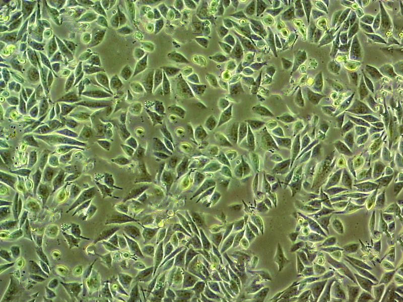
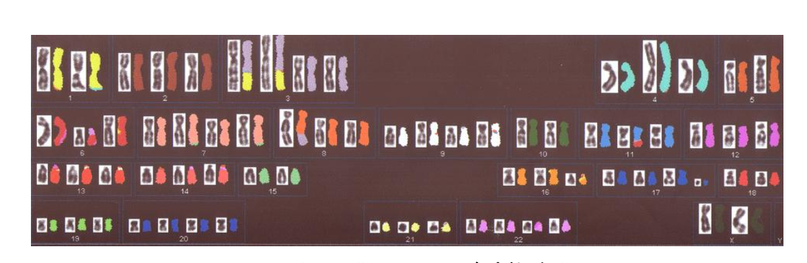
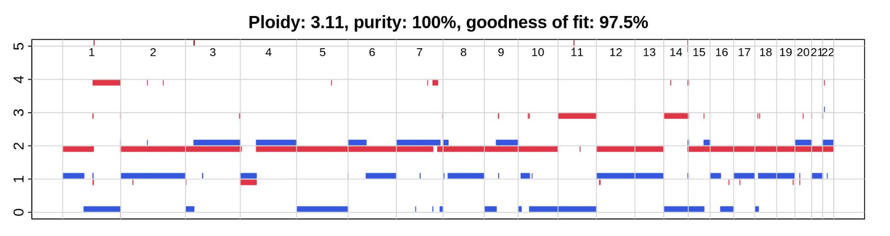
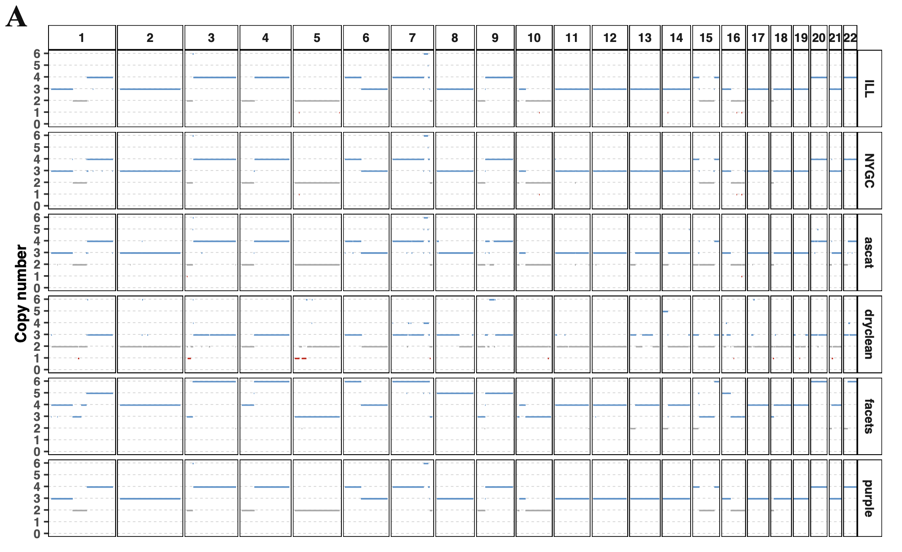
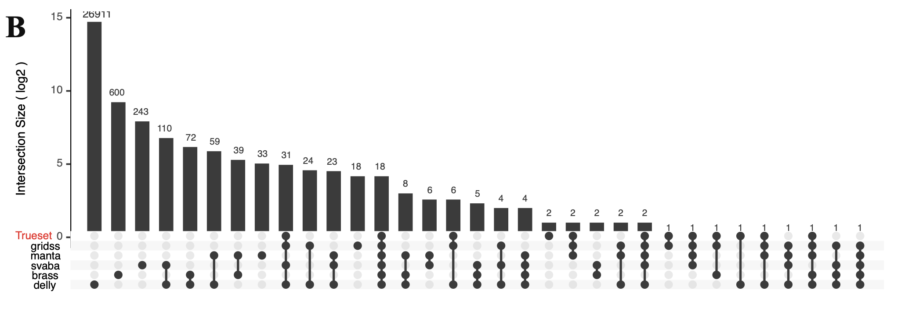

3. Use case III: Whole genome sequencing of COLO829 cell line#
3.1. Background#
Whole-genome sequencing (WGS) provides a broad view of the somatic genome, including coding and non-coding mutations, copy-number changes, and structural rearrangements. Compared with WES, WGS captures a wider spectrum of genomic alterations and is therefore especially useful for tumor profiling, clonality analysis, and structural variant discovery. Because WGS data are large and analytically complex, benchmark-like datasets are particularly useful for evaluating workflow behavior. In this example, we use ClinDet to analyze the metastatic melanoma cell line COLO829 and its matched normal lymphoblastoid control, COLO829BL, a tumor-normal pair with well-characterized CNV and SV truth sets.
COLO829 cell line
{kind=link}

3.2. Why this case matters#
This case functions as a benchmark-style WGS example. It shows how ClinDet integrates multiple somatic callers, CNV tools, and SV callers in a tumor-normal workflow, and it provides a practical setting for comparing output consistency against a well-studied model system.
3.3. Setup a project folder#
Note
Before starting the analysis, please ensure that you have set up the analysis environment using the build_conda_env.sh script.
Create a folder named project/WGS in your home directory and activate the Clindet conda environment.
mkdir -p ~/projects/COLO829_WGS
cd ~/projects/COLO829_WGS
conda activate clindet
3.4. Download data and setup a samplesheet.csv#
Your can download WGS fastq file (~249G) from HMFtools Resources
cd ~/projects/COLO829_WGS
mkdir -p data && cd data
conda activate gsutil
gsutil -m cp \
"gs://hmf-public/HMFtools-Resources/test_data/COLO829v003T/fastq/COLO829v003R_AHHKYHDSXX_S13_L001_R1_001.fastq.gz" \
"gs://hmf-public/HMFtools-Resources/test_data/COLO829v003T/fastq/COLO829v003R_AHHKYHDSXX_S13_L001_R2_001.fastq.gz" \
"gs://hmf-public/HMFtools-Resources/test_data/COLO829v003T/fastq/COLO829v003R_AHHKYHDSXX_S13_L002_R1_001.fastq.gz" \
"gs://hmf-public/HMFtools-Resources/test_data/COLO829v003T/fastq/COLO829v003R_AHHKYHDSXX_S13_L002_R2_001.fastq.gz" \
"gs://hmf-public/HMFtools-Resources/test_data/COLO829v003T/fastq/COLO829v003R_AHHKYHDSXX_S13_L003_R1_001.fastq.gz" \
"gs://hmf-public/HMFtools-Resources/test_data/COLO829v003T/fastq/COLO829v003R_AHHKYHDSXX_S13_L003_R2_001.fastq.gz" \
"gs://hmf-public/HMFtools-Resources/test_data/COLO829v003T/fastq/COLO829v003R_AHHKYHDSXX_S13_L004_R1_001.fastq.gz" \
"gs://hmf-public/HMFtools-Resources/test_data/COLO829v003T/fastq/COLO829v003R_AHHKYHDSXX_S13_L004_R2_001.fastq.gz" \
"gs://hmf-public/HMFtools-Resources/test_data/COLO829v003T/fastq/COLO829v003T_AHHKYHDSXX_S12_L001_R1_001.fastq.gz" \
"gs://hmf-public/HMFtools-Resources/test_data/COLO829v003T/fastq/COLO829v003T_AHHKYHDSXX_S12_L001_R2_001.fastq.gz" \
"gs://hmf-public/HMFtools-Resources/test_data/COLO829v003T/fastq/COLO829v003T_AHHKYHDSXX_S12_L002_R1_001.fastq.gz" \
"gs://hmf-public/HMFtools-Resources/test_data/COLO829v003T/fastq/COLO829v003T_AHHKYHDSXX_S12_L002_R2_001.fastq.gz" \
"gs://hmf-public/HMFtools-Resources/test_data/COLO829v003T/fastq/COLO829v003T_AHHKYHDSXX_S12_L003_R1_001.fastq.gz" \
"gs://hmf-public/HMFtools-Resources/test_data/COLO829v003T/fastq/COLO829v003T_AHHKYHDSXX_S12_L003_R2_001.fastq.gz" \
"gs://hmf-public/HMFtools-Resources/test_data/COLO829v003T/fastq/COLO829v003T_AHHKYHDSXX_S12_L004_R1_001.fastq.gz" \
"gs://hmf-public/HMFtools-Resources/test_data/COLO829v003T/fastq/COLO829v003T_AHHKYHDSXX_S12_L004_R2_001.fastq.gz" \
.
then you need merge those fastq.gz files (eg. cat) to :
COLO829v003R_R1.fastq.gz (~26G)
COLO829v003R_R2.fastq.gz (~27G)
COLO829v003T_R1.fastq.gz (~96G)
COLO829v003T_R2.fastq.gz (~100G)
Next, create a CSV file named pipe_wgs.csv in the ~/projects/COLO829_WGS directory with the following content:
Tumor_R1_file_path,Tumor_R2_file_path,Normal_R1_file_path,Normal_R2_file_path,Sample_name,Project
/AbsoPath/of/projects/COLO829_WGS/data/COLO829v003T_R1.fastq.gz,/AbsoPath/of/projects/COLO829_WGS/data/COLO829v003T_R2.fastq.gz,/AbsoPath/of/projects/COLO829_WGS/data/COLO829v003R_R1.fastq.gz,/AbsoPath/of/projects/COLO829_WGS/data/COLO829v003R_R2.fastq.gz,COL0829,WGS
3.5. Prepare the YAML workflow config#
In the current workflow, you no longer need to create a project-specific snake_wgs.smk file. Instead, prepare a YAML configuration file and pass it to Snakemake with --configfile.
For this example, create ~/projects/COLO829_WGS/COLO829_WGS.yaml and update the following fields:
project.output_dir: output directory for this analysis.project.genome_version: reference genome version, such asb37.project.recal_BQSR: whether to run BQSR. For WGS data, this step can significantly increase runtime and disk usage, while usually providing limited improvement to the final results, soFalseis recommended in most cases.project.vcf2maf: VCF-to-MAF mode.project.sample_sheet: absolute path to the WGS sample sheet CSV file.run_params.somatic_caller_list: somatic SNV/INDEL callers to run.run_params.stages: workflow stages to run.run_params.germ_caller_list: germline callers to run.run_params.somatic_cnv_list: somatic CNV callers to run.run_params.somatic_sv_list: somatic SV callers to run.run_params.purple_sv: SV caller used by PURPLE-related downstream steps.
Note
project:
output_dir: '~/projects/COLO829_WGS'
genome_version: 'b37'
recal_BQSR: False
vcf2maf: 'raw'
sample_sheet: '~/projects/COLO829_WGS/pipe_wgs.csv'
run_params:
somatic_caller_list:
- strelkasomaticmanta
- muse
- cgppindel_filter
- deepvariant
- sage
- caveman
stages:
- conpair
- call_mut
germ_caller_list:
- caveman
- deepvariant
somatic_cnv_list:
- purple
- ascat
somatic_sv_list:
- svaba
- gridss
purple_sv: 'svaba'
3.6. Configuration rationale#
This WGS configuration is designed to emphasize broad somatic event discovery in a paired tumor-normal sample. We keep recal_BQSR=False because BQSR usually increases runtime and storage requirements more than it improves final WGS results in this setting. The selected somatic callers cover complementary SNV/INDEL signals, purple and ascat are retained as CNV methods, and svaba together with gridss provides a practical combination for structural-variant discovery in this example.
3.7. Run clindet#
There is two way you can run clindet
run on a local server
submit to HPC through slurm
3.7.1. Run on local node#
nohup snakemake -c 30 --config run_type=wgs \
--configfile ~/projects/COLO829_WGS/COLO829_WGS.yaml \
--rerun-triggers mtime --benchmark-extended \
--use-singularity --singularity-args "--bind /your/home/path:/your/home/path" \
--latency-wait 300 --use-conda --conda-frontend conda -k >> ~/projects/COLO829_WGS/COLO829_WGS.out &
3.7.2. Submit to HPC use slurm#
We provide a Slurm config.yaml file under the clindet/workflow/config_slurm folder.
nohup snakemake -c 30 --config run_type=wgs \
--configfile ~/projects/COLO829_WGS/COLO829_WGS.yaml \
--profile workflow/config_slurm \
--rerun-triggers mtime --benchmark-extended \
--use-singularity --singularity-args "--bind /your/home/path:/your/home/path" \
--latency-wait 300 --use-conda --conda-frontend conda -k >> ~/projects/COLO829_WGS/COLO829_WGS.out &
3.8. Results#
After successful execution, you will see the following directory structure. The cnv folder contains the copy number variants detection results, the sv folder contains the structural variants detection results, and the vcf/maf folders contain mutaions (annotated and raw) results.
3.8.1. Overview of outputs#
~/projects/WGS/b37/results
├── cnv ** Copy Number variants results**
│ └── paired ** For tumor-normal paired sample**
│ ├── ascat
│ └── purple
├── dedup ** deduplication BAM files**
│ └── paired
├── maf ** annotation somatic mutation MAF files**
│ └── paired
│ └── COL0829
├── qc ** QC results for fastp conpair and so on**
│ └── dedup
│ └── paired
├── recal ** BAM files after base recalibration**
│ └── paired
├── sv ** Structural Variant results**
│ └── paired
│ ├── BRASS
│ ├── DELLY
│ ├── gridss
│ ├── linx
│ └── svaba
├── vcf
└── paired
├── COL0829
└── HG008
3.8.2. What to expect#
For this case, the most informative outputs are the merged somatic MAF files, the purple and ascat CNV results, and the SV calls generated by svaba and gridss. Successful completion should allow readers to compare large-scale copy-number structure, inspect variation across SV callers, and evaluate how closely the resulting profiles resemble the published COLO829 benchmark patterns.
3.9. Common pitfalls#
sample_sheetshould be an absolute path and must point to files visible inside the Singularity bind mount.genome_versionin the YAML file must match the WGS reference resources configured in the globalconfig.yaml.WGS input files are large, so insufficient temporary disk space often causes failures before final outputs are produced.
SV callers can vary substantially in sensitivity and false-positive rate, so individual caller outputs should be interpreted in the context of the combined workflow rather than in isolation.
3.9.1. Copy number variants of COLO829#
To assess the consistency among different software tools in representing the genomic content of the COLO829 cancer cell line, we evaluated the presence of CNVs and SVs. Regarding copy number variation, the four software tools generated similar estimates of tumor purity and ploidy.
The karyotype of the COLO829 cell line
{kind=link}

Copy number results of COLO829
{kind=link}

Furthermore, low-resolution copy number alteration (CNA) analysis revealed highly consistent copy number profiles across external “true set” software tools except for Facets, with correlation coefficients of 0.76–0.98 among different datasets.
{kind=link}

3.9.2. Structural variants of COLO829#
Due to the absence of established benchmarks and best-practice protocols for somatic SV detection, the primary aim of this study was to establish an analytical workflow rather than to benchmark SV calling tools. Consequently, we selected optimal mapping and SV calling tools based on current best practices and available knowledge. SV calling parameters were optimized for high sensitivity rather than maximum precision to minimize the risk of missing genuine events. Compared to the previously established “truth set” from XX et al., the candidate somatic SV calls produced by individual software tools showed considerable variability, ranging from 115 breakpoints detected by GRIDSS to 27,285 by DELLY, resulting in a combined total of 28,233 merged SV calls. Among these tools, DELLY generated a relatively high number of false-positive calls. The results indicated that integrating outputs from multiple SV detection tools substantially reduced the number of false-positive predictions.
{kind=link}
